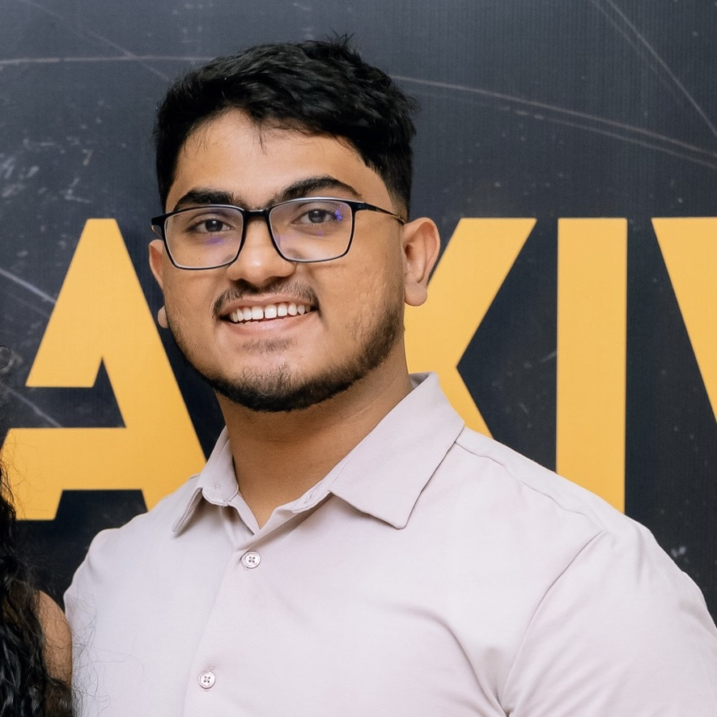

Software Engineer at IFS, Colombo
I find out why enterprise software breaks, and I fix it before it holds up a go-live.
Nearly four years supporting IFS Cloud and Mobile Work Order for manufacturing and service customers in North America and the UK.

Case replays
Taken from real cases. Customer details removed.
What I do
Customers and partners raise cases through ServiceNow. I find out what is really going wrong and fix it, or hand it to R&D with everything they need.
Troubleshooting
Mobile sync failures, initialization problems, slow performance. I debug until the root cause is clear, whether it's in IFS, the network or the customer's setup.
Escalations
P1 calls, daily ops calls and go-live support, with the customer kept up to date while the work goes on.
Fixes and workarounds
I apply and test urgent corrective fixes, and write scripts that keep the business running until the permanent fix lands.
Clear handoffs to R&D
When code has to change, the Jira I raise already has the steps, logs and impact, so nobody loses a day going back and forth.
Case stories
Open a folder to read the full case.
A go-live under pressure
Mobile init took 15 minutes. The cause was outside IFS.
A go-live under pressure
Mobile init took 15 minutes. The cause was outside IFS.
The problem
During an MWO rollout at a North American utility group, initializing the app took more than 15 minutes. The account was escalated to the highest level, with a daily ops call and a growing queue of cases from two of the group's companies.
What I did
I ran the same user on our side and it finished in about 3 minutes. Testing showed the cause: their network, plus an older app version installed from a third-party source instead of the Microsoft Store.
How it ended
Each issue went to the team that could fix it. When a sister company called empty error log entries a show stopper, I worked it through with R&D and showed there was no business impact, so no out-of-band fix was needed.
Saving a Monday go-live
Users couldn't initialize four days before go-live.
Saving a Monday go-live
Users couldn't initialize four days before go-live.
The problem
The Thursday before go-live, an oil and gas services company's MWO users couldn't initialize the app using Group Push. The case was tagged for maximum attention.
What I did
I got on a call with the customer straight away and gathered the details. The next day, in the escalation call, we tried several fixes without success. As a last resort we switched them from Group Push to Batch.
How it ended
Batch worked. Users could initialize, and the go-live went ahead on the Monday as planned.
Taking over a system-wide slowdown
Picked up a live escalation and brought the system back to normal.
Taking over a system-wide slowdown
Picked up a live escalation and brought the system back to normal.
The problem
Widespread slowness and system-down incidents had produced several MWO cases at once. A colleague handled the escalation first and I took it over a week in.
What I did
I joined the weekly escalation touchpoint calls with the customer and kept them updated, while working through the related cases one by one.
How it ended
The cases were resolved and the system went back to normal performance.
A few numbers
supporting IFS Cloud and MWO customers, nearly
fewer dropped VoIP calls after my route testing at Vinota Networks
How I work a case
The same four steps, whether it's a quiet ticket or a P1 with management on the call.
Reproduce it
Run the same user, data and device on our side, so we know if the problem is the product or the environment.
Find the real cause
Logs, queries, versions and network. I keep going until the evidence points one way.
Fix it or hand it off
A config change, corrective fix or script if I can. A Jira with full evidence if R&D needs to change code.
Close the loop
Tell the customer what changed and why, in plain words, and only once it's checked.
What a customer said
Janith was as determined as me to get to the bottom of the issue, which is refreshing to see. I have always thought your support agents are targeted based on the amount of cases closed, not fixed.
IFS customer, UK manufacturing. Shared in IFS Kudos Corner, September 2026.
About
I'm a Software Engineer at IFS, but most of my day isn't writing code. I work in Unified Support for the manufacturing vertical, looking after IFS Cloud Service Management and Mobile Work Order.
A lot of the job is investigation. I reproduce the problem, compare the customer's setup with ours, read logs, and test until I can say for certain where the issue sits. I also represent support in escalations, from daily ops calls to go-live weekends. I've learned to stay calm in those calls and never promise an answer I haven't checked.
Before IFS I spent three years at Vinota Networks in customer service, VoIP server administration and Angular development. I'm now finishing an MSc in Big Data Analytics at Robert Gordon University.
Studying now
MSc Big Data Analytics
Robert Gordon University, part-time
- Taught modulesDone
- PgDipDistinction, Sept 2026
- Final projectIn progress
- Jan 2023 to now
Software Engineer at IFS
IFS Cloud Service Management and MWO support. Investigation, debugging, corrective fixes, scripts and escalations.
- 2022
Associate Software Engineer at Vinota Networks
Built an Angular app on Firebase Cloud Functions.
- 2020 to 2022
Server Administrator at Vinota Networks
Cut VoIP call drop rates by 30% through route testing and troubleshooting.
- 2019 to 2022
Customer Service Specialist at Vinota Networks
Looked at daily user behaviour and gave customers faster, better-fitted support.
- 2025 to now
MSc Big Data Analytics at Robert Gordon University
Part-time. PgDip stage completed with Distinction in September 2026, final project in progress. Modules include data warehousing, big data programming, data mining, text analytics and cloud computing.
- 2018 to 2022
BEng (Hons) Software Engineering at the University of Staffordshire
Studied through APIIT Sri Lanka. Second Class Honours, Upper Division.